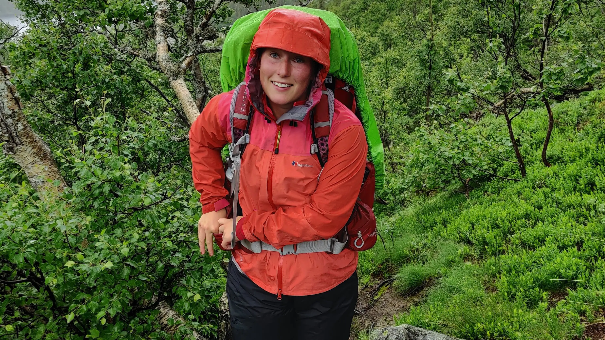
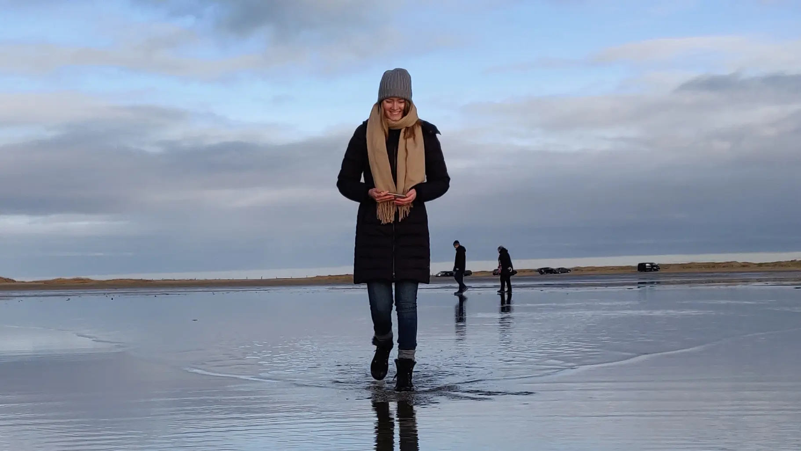
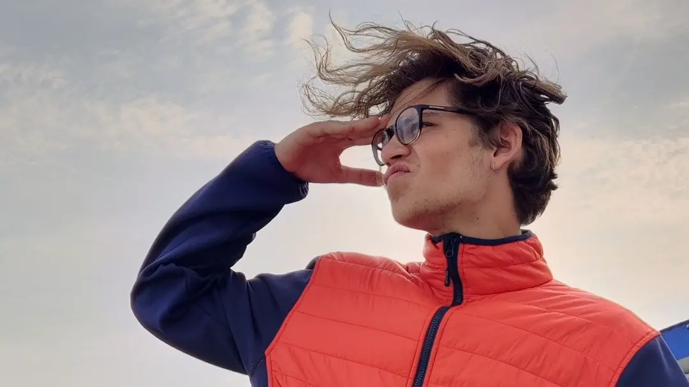

OLIVIA
Skal du bruge et godt tip, eller skal du pakke den perfekte rygsæk, er Olivia kvinden i dit liv. Olivia kan hjælpe med alt lige fra hvordan du bedst behandler din uld, din skaljakke, får bedst gang i dit bål, slipper for vabler, spiller tanke fisk, og pakker de bedste snacks. Derudover kan Olivia nævne og kende alle svampe fra Gyldendahls store svampebog.

CAROLINE
Med Caroline som guide bliver du aldrig væk - hun er en menneskelig GPS. Hvem har brug for kort, google maps eller kompas, når du kan følges med hende? Caroline tager dig off-road, så du får den bedste oplevelse. Undervejs kan hun underholde med sjove facts fra Ringenes Herre-trilogien. Det er win-win.

KASPER
Filosof, verdensmand, terapeut, auto-didakt og eventyrer. Der er få ting Kasper ikke har prøvet. Mange ser som Kaptajnen eller ledestjernen i deres liv og følger ham blindt hvor han går hen. Kasper har igennem sit liv besejret de højeste tinder og dybeste grotter i verden. Dette har givet ham den visdom han har brug for, for at give dig råd om outdoor-livet på internettet.